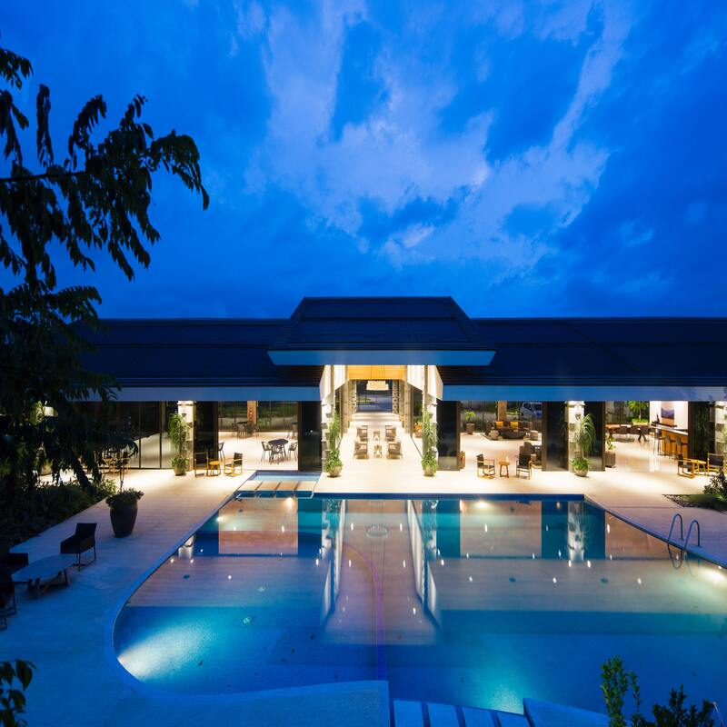
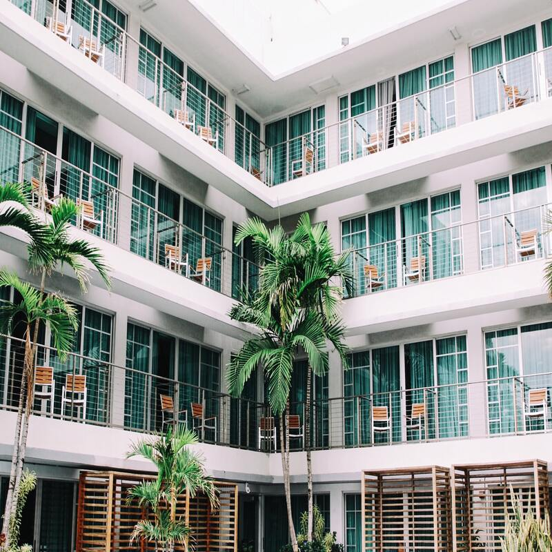

Instalaciones Hotel Estancia
Los espacios comunes son decididamente numerosos y confortables, garantizando el distanciamiento social indicado: el exótico jardín de la Villa Schuler lado casco antiguo, entre los más grandes pulmones verdes de la ciudad y conocido por la enorme variedad de aprox. 350 especies de plantas clasificadas botanicamente, la muy panoramica terraza con palmeras con vista a toda la costa jónica, el elegante Orangerie, el salón de desayunos «Etna» con piano, televisión vía satélite y ángulo de lectura, la recepción con el bar y el ascensor panorámico, un jardín de invierno al tercer piso, y en fin el «Rooftop Lounge&Terrace», donde es posible mirar por 360° grados Taormina y sus alrededores.
Puede reservar solo la habitación o añadir diferentes tipos de desayuno. Nuestro icónico y reforzado desayuno, que adopta los criterios de Slow Food, se sirve «a la carta» en el salón de desayunos, en la panorámica Terraza de las Palmeras, o en el Orangerie. Otros tipos de desayuno pueden ser servidos en la privacidad de su propia habitación. El hotel despone de 21 habitaciones, 5 Junior Suites y una “Garden Villa Suite”, todas muy cuidatas en los detalles. La clientela es internacional y en su mayoría individual, los servicios ofrecidos son atentos y personalizados.
.jpg)
-------------------------------------------------------------------------------
-------------------------------------------------------------------------------
-------------------------------------------------------------------------------